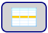

Funktionalität Crosstable Editor
Goto Section: ermöglicht die Navigation innerhalb des Crosstable.
Retentive [1 - 192]: ]: Variablen, die ihren Wert behalten, wenn das Gerät ausgeschaltet wird;
Not Retentive [193 - 4999]: Variablen, die ihren Wert verlieren, wenn das Gerät ausgeschaltet wird;
Diagnostic [5000 - 5299]: Diagnosevariablen. Sie werden bei der Kommunikation mit einem anderen Protokoll als der “PLC” verwendet. Weitere Informationen finden Sie im Kapitel “Diagnosevariablen”
Local I/O [5300 - 5389]: Eingangs- und Ausgangsvariablen des Geräts. Diese Variablen können umbenannt und modifiziert werden (in einigen Teilen), um mehr Flexibilität beim Schreiben der Anwendung zu ermöglichen. Weitere Informationen finden Sie im Kapitel “Produktvariablen”;
System [5390 - 5472]: Systemvariablen. Weitere Informationen finden Sie im Kapitel “Produktvariablen”.
 Ermöglicht es Ihnen, die leeren Zeilen des Crosstable zu erweitern oder zu komprimieren.
Ermöglicht es Ihnen, die leeren Zeilen des Crosstable zu erweitern oder zu komprimieren.
 Führen Sie eine erweiterte Suche nach einer oder mehreren Variablen im Crosstable durch.
Führen Sie eine erweiterte Suche nach einer oder mehreren Variablen im Crosstable durch.
 Ermöglicht das Hochladen der “Crosstable.csv” , die sich in einem anderen Projekt befindet. Die importierte Datei überschreibt die aktuelle Datei zum Zeitpunkt des Speicherns..
Ermöglicht das Hochladen der “Crosstable.csv” , die sich in einem anderen Projekt befindet. Die importierte Datei überschreibt die aktuelle Datei zum Zeitpunkt des Speicherns..
 Aktivieren Sie die Mehrfachbearbeitung von Variablen im Crosstable.
 Ermöglicht es Ihnen, die zuletzt durchgeführte Aktion abzubrechen und zur vorherigen Konfiguration zurückzukehren.
Ermöglicht es Ihnen, die zuletzt durchgeführte Aktion abzubrechen und zur vorherigen Konfiguration zurückzukehren.
 Ermöglicht es Ihnen, die aktuellen Einstellungen zu speichern. Wenn Sie eine Änderung vornehmen, erscheint der Rand der Schaltfläche in rot, ansonsten ist sie grün.
Ermöglicht es Ihnen, die aktuellen Einstellungen zu speichern. Wenn Sie eine Änderung vornehmen, erscheint der Rand der Schaltfläche in rot, ansonsten ist sie grün.
 Überprüft die Richtigkeit der Tabelle.
Überprüft die Richtigkeit der Tabelle.
 Startet das SPS-Programm. Wenn im Crosstable keine Fehler vorhanden sind, können Sie die SPS-Software öffnen. Weitere Informationen finden Sie im Kapitel “Öffnen der SPS-software”.
Startet das SPS-Programm. Wenn im Crosstable keine Fehler vorhanden sind, können Sie die SPS-Software öffnen. Weitere Informationen finden Sie im Kapitel “Öffnen der SPS-software”.
Durch Drücken der rechten Maustaste auf der Tabelle können Sie einige Operationen durchführen:

Goto Line: Wählt direkt die gewünschte Linie aus
Insert Blank Rows: : Fügt eine leere Zeile ein.
Clear Rows: : Löscht den Inhalt der ausgewählten Zeile.
Delete Rows: Löscht eine oder mehrere ausgewählte Zeilen.
Copy Rows: Kopiert eine oder mehrere ausgewählte Zeilen.
Cut Rows: Schneidet eine oder mehrere ausgewählte Linien aus.
Paste Rows: Fügt eine oder mehrere ausgewählte Zeilen ein.
Paste MPNC005 / MPNC006 Modules: alle Variablen, die mit Remote-Modellen (MPNC005 und
MPNC006) und den angeschlossenen Modulen (MPNC020 / MPNC030 / MPNC035)verknüpft sind, einfügen.
Paste MPNE10 Module: alle Variablen, die mit Remote-Modellen MPNE10 verknüpft sind, einfügen.
Paste TPLC050 Modules: alle Variablen, die mit Remote-Modellen (MPNC020 / MPNC030 / MPNC035) verknüpft sind, einfügen.
ALLARM / EREIGNIS Variablen:
Wenn wir eine Variable als Alarm/Ereignis verwenden wollen, müssen wir sie im Feld “Behavior” angeben,
aber es ist nur möglich, wenn:
Das Feld “Priority” unterscheidet sich von “0”;
Das Feld “Update” unterscheidet sich von “H”;
Das Feld “Type” ist gleich “BIT”;
Mit diesen Einstellungen können Sie die Alarm-/Ereignisbedingung auswählen.

Die im Dropdown-Menü vorhandenen Variablen sind alle im Crosstable vorhanden, einschließlich der des Systems,
mit Ausnahme der Variablen, die im Feld “Update” den Wert “H” und im Feld “Priority”
den Wert “0” haben.